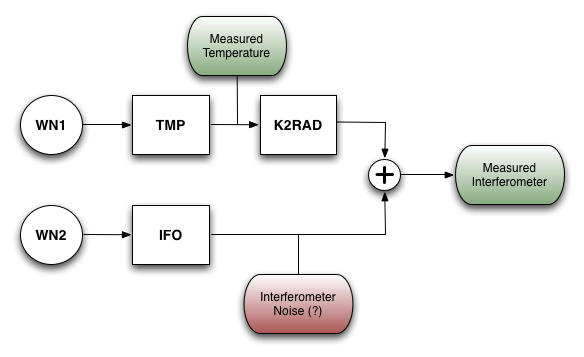
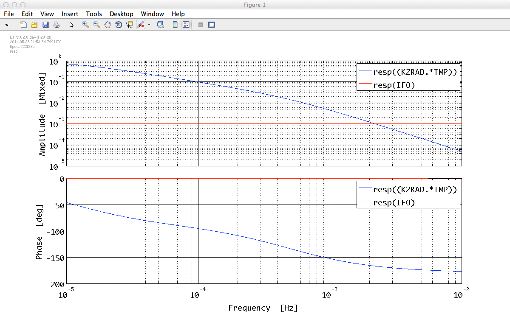
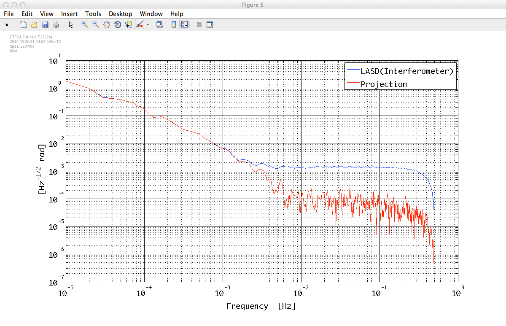

| LTPDA Toolbox™ | contents | |
We now come back to the IFO/Temperature working example. Our interest here is not to add more tools to the data analysis chain that you've been developing but to create a simple toy model that allows you to reproduce the steps done up to now but with synthetic data.
The problem is shown schematically in the figure below. We will generate temperature and interferometer noisy data by applying a filter (TMP and IFO) to white noise data (WN1 and WN2). We will then add a temperature coupling (K2RAD) to the interferometer and from the measured interferometer and temperature data we will then estimate the temperature to interferometer coupling.

Since we've been through the same steps that you need to apply here in the previous section we will give here the step by step description of the task and let you play with the models.
We need three models: one to generate temperature-like data, another modelling the interferometer and a third one acting as the K-to-rad transfer function.
| Key | Value |
|---|---|
|
'name' |
'TMP' |
|
'ounits' |
'K' |
|
GAIN |
10 |
|
POLE 1 |
1e-5 |
For example, this few lines would do the job
TMP_mod = pzmodel(10, 1e-5, []);
TMP_mod.setOunits('K')
TMP_mod.setName('TMP')
| Key | Value |
|---|---|
|
'name' |
'IFO' |
|
'ounits' |
'rad' |
|
GAIN |
1e-3 |
|
POLE 1 |
0.4 |
| Key | Value |
|---|---|
|
'name' |
'K2RAD' |
|
'iunits' |
'K' |
|
'ounits' |
'rad' |
|
GAIN |
1e-1 |
|
POLE 1 |
5e-4 |
You can take a look at your models. Since we are interested in the projection of temperature into interferometric data, we can plot the response of TMP*K2RAD against the IFO
pl = plist('f1', 1e-5, 'f2', 0.01);
resp(K2RAD_mod * TMP_mod, IFO_mod, pl)

Now discretize the models at fs = 1Hz using the miir constructor. After that you will obtain three digital filters.
For example, the model related to temperature noise would be discretized like this:
TMPd = miir(TMP_mod, plist('fs', 1));
We will need two initial white noise time series, WN1 and WN2, that we will use as a seed to apply our filters and get noise shaped time series.
You will need the ao constructor for that. You could for instance use the following settings
| Key | Value |
|---|---|
|
'name' |
'WN1' |
|
'tsfcn' |
'randn(size(t))' |
|
'fs' |
1 |
|
'nsecs' |
250000 |
| Key | Value |
|---|---|
|
'name' |
'WN2' |
|
'tsfcn' |
'randn(size(t))' |
|
'fs' |
1 |
|
'nsecs' |
250000 |
For each noise source you will need to apply the filter that you have designed to the white noise data:
For example, following our notation:
T = filter(WN1, TMPd);
Temperature and interferometric noise are uncorrelated, so we need to use here the second noise time series WN2.
For example, following our notation:
IFO = filter(WN2, IFOd);
In this case you need to apply both filters in serial, you can do this in one command by using the 'bank' property of the filter method.
Hint: you can input a vector of filters into the filter method and
ask it to filter the data in 'parallel' or in 'serial' (the one we are interested
here) by doing the following
K2RAD = filter(WN1, [TMPd K2RADd], plist('bank', 'serial'));
|
At this point the IFO represents the purely interferometric noise and the K2RAD the contribution to interferometric noise coming from temperature. You need to add both to get the final interferometric data. This only requires to add both AOs.
Here we will reproduce the main steps performed in topic 3 analysis: power spectral and transfer function estimation.
We will do the analysis with data in the region going from 1e5 to 2e5 seconds to avoid initial transients. You must then split your two data streams introducing the following parameters in the split method.
| Key | Value |
|---|---|
|
'times' |
[1e5 2e5] |
After the splitting you must have two data streams that plot together should look like the ones below. The code should be similar to one in the following lines:
Ts = split(T, plist('times', [1e5 2e5]));
Ts.setName('Temperature');
IFOs = split(IFO_all, plist('times', [1e5 2e5]));
IFOs.setName('Interferometer');
% Plot in different panels with 'subplots' options
iplot(Ts, IFOs, plist('arrangement', 'subplots'))

Here you need to apply lpsd or psd methods. For example:
pl_psd = plist('order', 1, 'scale', 'ASD');
[psd_T, psd_IFO] = lpsd(Ts, IFOs, pl_psd);
iplot(psd_T, psd_IFO, plist('arrangement', 'subplots'))
The resulting spectrum should look like this

Here you need to apply ltfe or tfe methods. For example:
T2IFO = ltfe(Ts, IFOs);
T2IFO.setName('Transfer function')
You can now compare the transfer function model with the estimation obtained from the data:
pl_resp = plist('f1', 1e-5, 'f2', 1);
iplot(T2IFO, resp(K2RADd, pl_resp))

Reproducing the analysis performed in topic 3 you will be able to project the temperature noise contribution into interferometric noise. The result obtained should be the one in the figure below and the code you will need for that should be similar to this:
% Compute projection
Projection = abs(T2IFO) .* psd_T;
Projection.simplifyYunits;
Projection.setName();
% Plot against interferometer noise
iplot(psd_IFO, Projection)

| |
By defining filter properties | Topic 5 - Model fitting | |
©LTP Team